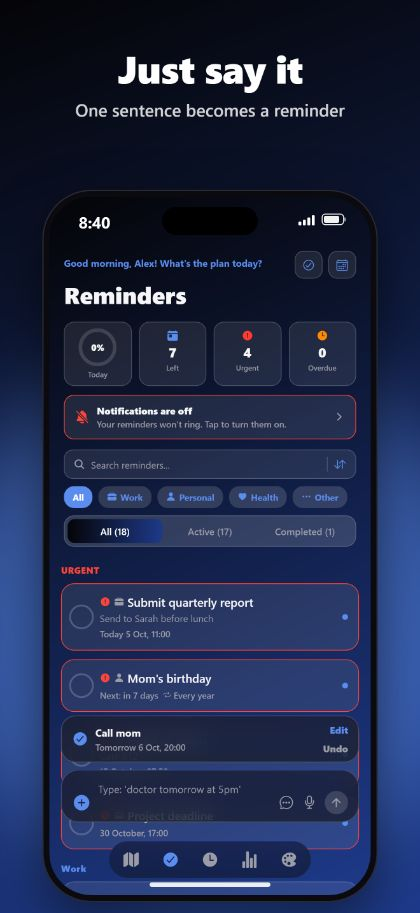
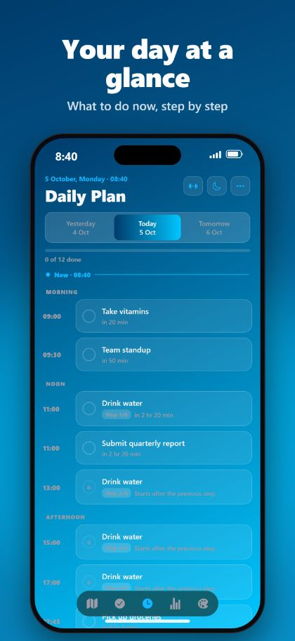
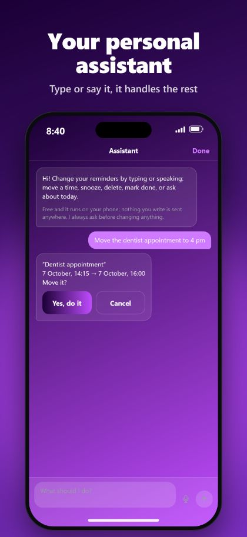

Hands-free with Siri
Say “Hey Siri, add a reminder with RemindMe”. Siri asks the day and the time and saves it without opening the app.
RemindMe turns one typed or spoken sentence into a reminder with the right date, time and repeat. No menus, no forms.
Free for iPhone and iPad. No account, no ads.



Remind me to call mom tomorrow at 8 pmCall mom · tomorrow, 8:00 pm
Take my pills every day at 9 and 21Take my pills · every day, 9:00 am and 9:00 pm
Drink water every 2 hours between 9 and 21Drink water · every 2 hours, 9:00 am to 9:00 pm
Alarm tomorrow at 6:30Alarm · tomorrow, 6:30 am
Say “Hey Siri, add a reminder with RemindMe”. Siri asks the day and the time and saves it without opening the app.
On iOS 26 a reminder can ring like a real alarm, even in silent mode or a Focus.
Pin a place on the map and be reminded when you arrive or leave, even when the app is closed.
A daily plan with only what is left for today, a calendar, streaks and snooze.
No account. No ads. No tracking. Your reminders stay on your iPhone and iPad.
A roomy layout for big screens, every orientation, Split View, widgets and beautiful themes.
RemindMe is a reminder app for iPhone and iPad. You type or say one sentence and it creates a reminder with the right date, time and repeat.
RemindMe is free to download and has no ads.
No. There is no account and no sign-up. Your reminders stay on your device.
Yes. Say “Hey Siri, add a reminder with RemindMe”. Siri asks for the day and the time and saves the reminder without opening the app. “Add a detailed reminder” and “Add a place reminder” work too.
On iOS 26 and later, yes. RemindMe can ring a real alarm that sounds even in silent mode or a Focus.
Turkish, English, French, German and Arabic, including long sentences and several reminders in one go.
Yes. No account, no ads, no tracking, and your reminders stay on your device.